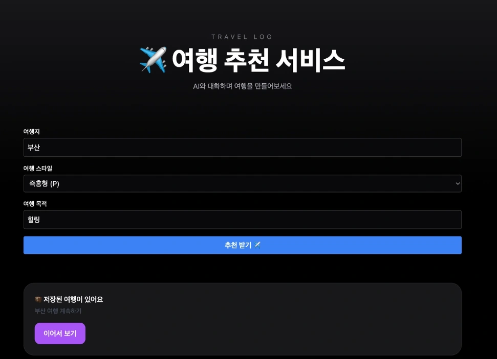

PROJECT 05 / 여행 · 추천과 기록PROJECT 05 / Travel · Recommendations and Journaling
TravelFlix: 나만의 여행 파트너TravelFlix: My Personal Travel Partner
AI 여행 추천과 사진의 위치 정보를 연결해 계획부터 여행 일기까지 이어지는 프로토타입을 구현했습니다.Built a prototype that links AI travel recommendations with photo location data, spanning from planning to travel diaries.
01 문제 상황 Problem
여행 계획, 사진 보관, 장소 정리, 후기 작성이 서로 다른 서비스에 흩어져 있어 여행 후 기록을 완성하는 데 손이 많이 갑니다. 대화로 계획을 세우고 사진만 올려도 장소별 기록이 이어지는 경험을 목표로 했습니다.Trip planning, photo storage, place organization, and review writing are scattered across different services, making it laborious to complete a travel record afterward. The project aimed for an experience in which users plan through conversation and simply upload photos to have records organized by place.
02 사용 모델과 데이터 Models and Data
모델·기술Models · Techniques
- Claude API: 대화형 여행 추천과 여행 일기 생성.Claude API: conversational travel recommendations and travel diary generation.
- 한국관광공사 TourAPI의 장소 정보를 프롬프트에 넣어 추천을 실제 장소 데이터에 연결했습니다.Place information from the Korea Tourism Organization TourAPI was inserted into prompts to ground recommendations in real place data.
데이터·입력Data · Inputs
- 지역·여행 스타일 등 사용자 조건, 대화 이력, TourAPI의 관광지 정보.User conditions such as region and travel style, conversation history, and tourist attraction data from TourAPI.
- 업로드한 여행 사진의 EXIF GPS 정보와 Kakao Maps의 좌표·장소 정보.EXIF GPS data from uploaded travel photos and coordinate and place information from Kakao Maps.
03 구현 과정 Implementation
- 버튼으로 기본 조건을 받고 추가 조건은 대화로 수집해 여행지를 추천합니다.Basic preferences are collected via buttons and additional conditions through conversation to recommend destinations.
- 확정한 여행 계획을 FastAPI·Supabase에 저장하고, 사진의 GPS를 추출해 반경 500m 안의 여행 장소와 연결합니다.Confirmed travel plans are stored in FastAPI and Supabase, and GPS data extracted from photos is matched to travel spots within a 500 m radius.
- 장소와 사진을 기반으로 일기를 생성하고, 여행별 화면에서 사진과 글을 함께 확인하게 합니다.Generates diary entries from places and photos, and lets users view photos and text together on a per-trip screen.
04 핵심 결과 Key Results
- React 기반 화면과 AI·백엔드를 연결해 여행 추천, 사진 업로드, 장소 분류, 일기 생성 흐름을 구현했습니다.Connected a React-based interface with the AI and backend to implement the flow of travel recommendations, photo upload, place classification, and diary generation.
- 가상 좌표 테스트에서 발생한 문제를 실제 GPS가 있는 사진으로 점검하고, 추천 장소를 관광 데이터와 지도 정보로 대조했습니다.Issues found in tests with virtual coordinates were checked using photos with real GPS data, and recommended places were cross-checked against tourism data and map information.

05 한계와 발전 방향 Limitations and Next Steps
- 추천의 정확성이나 장소 자동 매칭 성능을 평가한 표본·정량 지표는 제시되지 않았습니다.No sample-based or quantitative metrics were presented for recommendation accuracy or automatic place-matching performance.
- GPS가 없는 사진의 장소 추론, 여행 경로 시각화, 기록의 영상화와 서비스 규모 확장은 향후 과제입니다.Inferring locations for photos without GPS, visualizing travel routes, turning records into video, and scaling the service remain future work.
자료: 최종보고서. 제출 자료를 바탕으로 정리했으며, 결과는 해당 프로젝트의 구현·실험 범위에 해당합니다.Source: final report. Summarized from the submitted materials; results reflect the scope of the project's implementation and experiments.